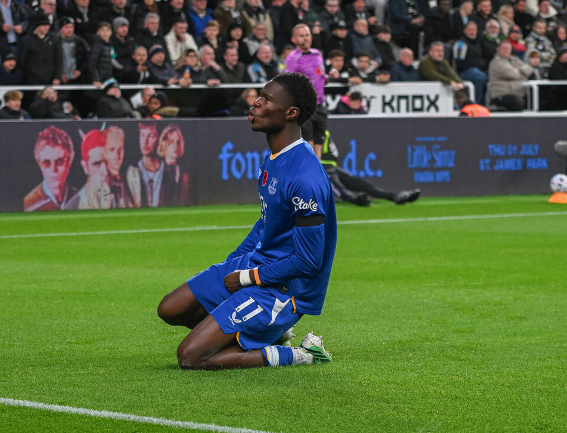
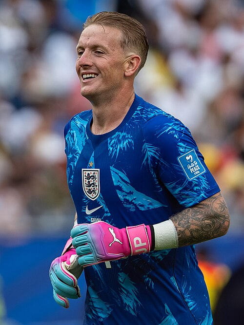
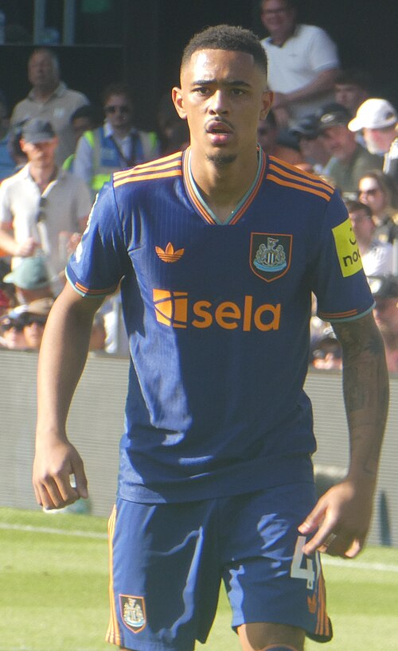

Peluit panjang berbunyi di St James' Park! Everton sukses menaklukkan Newcastle United dengan skor tipis 1-0. The Magpies harus mengakhiri laga dengan 10 pemain setelah Jacob Ramsey menerima kartu merah pada masa tambahan waktu babak kedua.
Everton membuka keunggulan pada menit ke-49. Berawal dari situasi tendangan bebas cepat, Tyrique George mendapat ruang untuk melepaskan tembakan. Lukas Horníček gagal mengantisipasi bola dengan sempurna sehingga Thierno Barry dengan mudah menyambar bola muntah ke gawang yang sudah kosong.
Horníček kemudian berusaha menebus kesalahannya. Ia lebih dulu menepis tembakan jarak jauh Kiernan Dewsbury-Hall, sebelum kembali menggagalkan sundulan Jake O'Brien yang mengarah ke gawang. Everton terus menekan, tetapi keunggulan mereka tetap hanya satu gol.
Newcastle nyaris menyamakan kedudukan melalui Anthony Elanga. Sentuhannya di tiang jauh membuat bola membentur Jordan Pickford, lalu tiang gawang, sebelum bergulir di dekat garis gawang dan berhasil diamankan. Jacob Ramsey yang masuk sebagai pemain pengganti juga sempat mengancam lewat tembakan dari luar kotak penalti, tetapi bola melenceng tipis di sisi kiri gawang.
Pada menit ke-90, Newcastle memperoleh peluang terakhir melalui Yoane Wissa. Namun, Pickford tampil gemilang dengan menggunakan kaki kanannya untuk menggagalkan tembakan jarak dekat tersebut. Malam buruk tuan rumah ditutup oleh kartu merah Ramsey pada menit 90+8 setelah menerima dua kartu kuning dalam waktu berdekatan.
Newcastle mencatat 17 tembakan dengan dua tepat sasaran dan xG 1,47. Everton melepaskan 16 tembakan, lima di antaranya tepat sasaran, dengan xG 2,15. Everton pun membawa pulang tiga poin dari St James' Park, sementara para pemain Newcastle meninggalkan lapangan diiringi kekecewaan pendukung mereka.
MOMEN PENTING
49'
GOAL! NEWCASTLE 0-1 EVERTON. Tembakan Tyrique George gagal diamankan dengan sempurna oleh Horníček. Thierno Barry sigap menyambar bola muntah dan membawa Everton unggul.
55'

Branthwaite menyundul bola, tetapi Hornicek masih mampu menepisnya.
PELUANG! EVERTON HAMPIR MENGGANDAKAN KEUNGGULAN! George mendapat ruang di sisi kanan sebelum mengirim umpan silang ke tiang jauh. Branthwaite berhasil memenangi duel udara atas Hall, tetapi sundulan langsungnya masih mampu ditepis Horníček!
90'

Jordan Pickford menjaga keunggulan Everton dengan penyelamatan penting.
PICKFORD MENYELAMATKAN EVERTON! Wissa mendapat peluang dari jarak dekat, tetapi Pickford bereaksi cepat dan menggagalkan tembakannya dengan kaki kanan.
90+8'

Jacob Ramsey di laga kontra Everton.
KARTU MERAH! NEWCASTLE KEHILANGAN RAMSEY. Jacob Ramsey menerima kartu kuning kedua pada masa tambahan waktu. Newcastle harus menuntaskan pertandingan dengan 10 pemain.